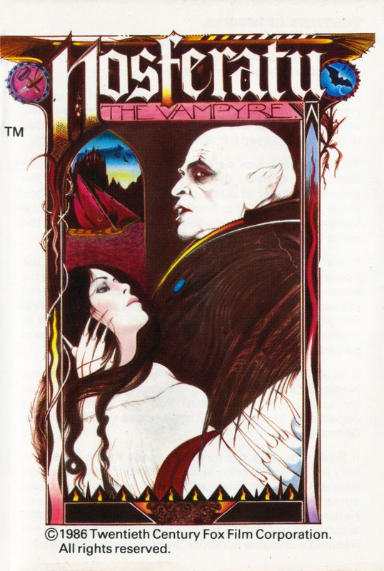
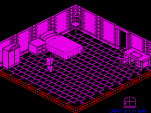
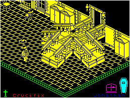
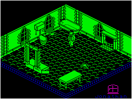

Nosferatu


{kind=link}

| Publisher: | Piranha |
| Price: | £9.95 |
| Year: | 1986 |
| Source: | CRASH, Issue 36 |

Nosferatu The Vampyre has been dragged out, dusted down and brought up to date. Those who remember the Twentieth Century Fox film of the same name will know that Nosferatu was the only Vampyre to have his deadly fangs firmly in the front of his mouth, and not at the side like the Bela Lugosis and Peter Cushings that were to follow.
Nosferatu is divided into three sections, and predictably enough one section has to be completed before the player can progress to the next. The first part of the game takes place in Dracula’s castle. Jonathan Harker is an estate agent’s minion. The Count wishes to move from his draughty house on the hill. When Jonathan gets to the castle, his worst fears are realised. Being a smart man, he realises that if Nosferatu moves into the peaceful town of Wismar, the inhabitants of this sleepy village could soon become his unwitting victims and turn into Vampyres themselves, Eeek!

room. I think those doggies fancy
dining early tonight
Unfortunately, Jonathan has made a slight faux-pas. He has left the deeds to the house on the dining table in the Count’s castle, and when he returns they are gone. Mr. Harker must recover these deeds and escape from the Count’s castle to complete section one of the game.
Apart from Nosferatu, there are other nasty things for the poor man to wrestle with. Vampyre bats, sewer rats and large rabid wolves are all a potential threat as they guard the castle while the Count takes his beauty sleep. These creatures will sap away Jonathan’s life energy if they make contact with him. This life force is represented by an ever-growing coffin at the bottom of the screen, when the coffin is completed he dies. Apart from these creatures, the Count has also conjured up hallucinations which haunt and trick Jonathan as he stumbles around the castle’s rooms in search of the deeds.

the castle. The coffin grows in
size, Jonathan’s close to a sticky
end
Food can be picked up along the way to replenish his energy, and the crucifixes, swords and candles which can also be picked up all help to make his task a mite easier. The time of day or night is shown by a change in room colours and by a chart at the bottom of the screen. It is not essential for Jonathan to have the deeds before he leaves the castle, but if he does have them it will make his task a lot easier in the next section.
In level two the action takes place in the town of Wismar and the player controls three characters; Jonathan Harker again, his wife Lucy and a chap called van Helsing. Play can be switched between the three by using keys 1 through to 3.

terrifying looking spiders have
just crawled out of the bath
Nosferatu has been lured to Wismar by Lucy’s unique powers of attraction. While in the town he takes good advantage of the healthy population and begins to feed off them. However, unbeknown to Lucy’s husband and van Helsing, she is the only one who can kill Nosferatu. This makes things tricky in the third section. The two men must make short work of the hundreds of sewer rats which swarm around, while at the same time fending off the inhabitants who have already been turned into Vampyres by the Count.
In section three the player controls just Lucy. The object of this level is to lure Nosferatu to Lucy’s house for the Final Conflict. Jonathan and van Helsing are still unaware that Lucy alone can kill the Vampyre and are united in keeping her away from danger. The two men must be locked in the house while Nosferatu is lured to Lucy’s bedroom where she must keep him with her until dawn. If you are successful, the game ends with Nosferatu’s quick demise at the first rays of the sun!
CRITICISM
“This really is a very good game. The graphics are very detailed and originally drawn. Things like the bats and other animals are extremely well animated — which makes Nosferatu a very pretty game to play — but there is much more than meets the eye, like trap doors and secret passages, which once found open the whole game up. The game is very easy to get into, although I felt the controls were a touch unresponsive, considering the bats move at such a fast pace. After a very hard session of playing I found it very hard to get anywhere near level two. The options are fairly vast, although the old game option proved pretty useless. This is an excellent variant on an old game.”
“Although bearing initial similarities to Design Design’s earlier release, Nexor, the gameplay goes much beyond the simple wander around and collect object idea. The plot is actually very involved and complex. What’s more, it’s a real toughie to play. The most notable occurrence of this is when the bats attack you — they really go for your neck, the little horrors! Despite not be able to get very far into the games I’m sure I’ll play it again as there appears so much just waiting to be discovered. I have no hesitation in recommending it to anyone.”
“To begin with it is very easy to dismiss Nosferatu as just another filmation game with hardly any content, but if you stick with it for a few goes I’m sure that it will absorb you as completely as it did me. Graphically this has to be one of the most detailed games that I have ever played, nothing has been left out. The characters move around in the usual excellent filmation fashion and use of colour is understandably limited. The sound is also very good with lots of effects and a lovely tune on the title screen. All in all I’m glad to see that Piranha can still produce excellent games.”
COMMENTS
| Control keys: | Definable |
| Joystick: | Kempston, Cursor, Interface 2 |
| Keyboard play: | Somewhat sluggish |
| Use of colour: | Understandably limited |
| Graphics: | Detailed with good animation |
| Sound: | Tune which can be switched on or off during play |
| Skill levels: | Three |
| Screens: | 113 |
| General rating: | Love at first byte |
| Use of computer: | 90% |
| Graphics: | 93% |
| Playability: | 92% |
| Getting started: | 87% |
| Addictive qualities: | 92% |
| Value for money: | 91% |
| Overall: | 91% |